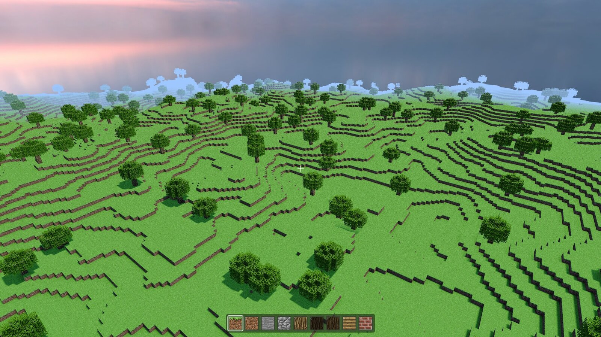

|
SleakEngine 1.0.0
C++23 multi-backend game engine
|
|
SleakEngine 1.0.0
C++23 multi-backend game engine
|
A C++23 game engine with four graphics backends. Write your game class, register your scenes, and the engine runs the window, rendering, lighting, physics, culling, and input.
Your game is one class. Everything below it is engine, and the layer boundaries are real: game code never reaches past the subsystem API, and the subsystems never name a specific backend.
You pick the backend at launch; nothing above the Renderer line changes when you do.
Four graphics backends behind one API. Vulkan, OpenGL, DirectX 11, and DirectX 12 all implement the same Sleak::RenderEngine::Renderer lifecycle. You pick one at launch with -r vulkan|opengl|d3d11|d3d12, or take the platform default: DirectX 11 on Windows, Vulkan everywhere else. Feature support is uneven by design. Vulkan is the most complete path (deferred shading, SSAO, SSR, TAA, bloom, image-based lighting), OpenGL covers deferred shading with SSAO and IBL, and the DirectX backends currently expose shadows plus tonemapping on DX11. Query what the running backend actually supports with Application::GetGraphicsCaps().
A GameObject and Component object model. Sleak::GameObject is a named entity with a tag, an optional parent/child hierarchy, and any number of attached components. AddComponent<T>() constructs a component in place; GetComponent<T>() finds it. Transform, mesh, material, animator, and camera-controller components ship with the engine, and your own components just derive from Sleak::Component.
Scenes with a real lifecycle. Subclass Sleak::Scene and override the hooks you need: OnLoad and OnUnload for assets, OnActivate and OnDeactivate for entering and leaving, Begin for one-time setup, and Update / FixedUpdate / LateUpdate for per-frame work. The scene owns every object you add to it and destroys them on unload.
Physics that follows your colliders. Attach a ColliderComponent and a RigidbodyComponent and the scene's Sleak::Physics::PhysicsWorld picks them up automatically. It maintains a dynamic AABB broadphase tree and answers raycast, sphere-sweep, and overlap queries against everything registered in it.
Culling that costs no GPU time. Sleak::CullingSystem does view-frustum culling plus software occlusion culling on the CPU, rasterizing occluder volumes you submit into a small depth buffer. It adapts: when a frame culls nothing, it stops rasterizing and probes again later.
Runtime vertex formats. The engine ships no game-specific vocabulary. Describe your own vertex layout with Sleak::VertexLayoutDesc, register it through Sleak::VertexFormatRegistry::Register, and build meshes against the returned handle with Sleak::MeshBatch::CreateMesh. The renderer binds the matching pipeline off the handle. See Vertex Format Registration.
Events you subscribe to by member function. Sleak::EventDispatcher::RegisterEventHandler(this, &MyScene::OnKeyPressed) is the whole registration story. Window, keyboard, and mouse events are dispatched synchronously to everyone listening for that type.
A UI wrapper for HUDs and tools. Sleak::UI gives you panels, text, buttons, sliders, and 2D drawing without exposing Dear ImGui, which stays a private engine dependency.
Reference-counted resource ownership. Sleak::RefPtr<T> is the owning pointer used throughout the public API in place of std::shared_ptr.
Browse the Topics list for the API grouped by subsystem (Core, Scene, Rendering, Lighting, Physics, Culling, Math, Memory, Events, Input, UI, Animation, Vertex Formats, Debug, Utility, File System), or the Namespaces and Classes lists for a flat index.
Include only from include/public/. Everything under include/private/ is free to change between versions.

Two projects build on SleakEngine and are useful as worked examples: SleakCraft, a voxel sandbox that registers its own 48-byte vertex format, and SleakSims, a character and animation showcase. SleakEngine-Empty is the starter template the Getting Started guide is built from.